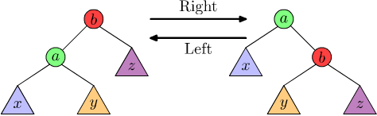
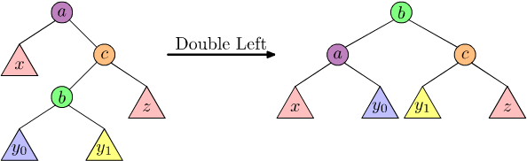
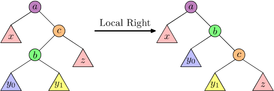

Weight-Balanced Tree - SML
Table of Contents
1. Introduction
Haskell uses Weight-balanced trees in their implementations of sets (Data.Set) and
maps (Data.Map). But their implementation is rather tricky. So I thought I would
write some notes about them. We should recall, in general, a binary tree
is inductively defined as
A Binary Tree is either
- the empty tree
- a branch consisting of a value, a left subtree, a right subtree, and possibly some metadata.
Algebraic data types were invented specifically to describe these inductive definitions, we could easily implement a tree in Standard ML as:
type Metadata = (* whatever you want, we omit it *); datatype 'a BinaryTree = EmptyTree | Branch of 'a * ('a BinaryTree) * ('a BinaryTree) * Metadata;
The Branch constructor takes a 4-tuple
(value, left_subtree, right_subtree, metadata) and produces a
BinaryTree object. (The ordering of the components of the 4-tuple is
arbitrary, we could easily make metadata the first component.)
What's so great about using algebraic data types for implementing trees?
It helps us reason about the code.
Whenever we write a function concerning a BinaryTree object, we can
write one clause to handle the case of the empty tree, and another
separate clause to handle the case of a branch. For example, we could
count the nodes in a tree thusly:
fun node_count EmptyTree = 0 | node_count (Branch (_, left, right, _)) = 1 + node_count left + node_count right;
If the tree were ordered such that the left subtree contained all values less than the value of the branch (and the right subtree contained all values greater than the value of the branch), and if further the left and right subtrees were equal in size, then searching for a value would take about \(\log_{2}(n)\) comparisons where \(n\) is the size of the tree. Other operations would similarly take logarithmic time, which is desirable compared to a linked list's linear time.
We can weaken our demand that the left and right subtrees be equal in size to be "neither branch should be horribly bigger than the other" and still have logarithmic runtime for the tree operations.
Let \(\Delta\in\mathbb{R}\) be a positive real constant (called the Weight Ratio) greater than 1.
Then a Weight-balanced tree is a binary tree \(T\), whose metadata is a non-negative real number called the tree's Weight denoted \(W(T)\), such that the left subtree is Balanced with respect to the right subtree (in the sense that one subtree's weights are no larger than some multiple of the weight of the other subtree), specifically: \(\Delta\cdot W(L)\geq W(R)\) and \(\Delta\cdot W(R)\geq W(L)\).
Phrased differently, the tree is balanced if the ratio of weights for the subtrees \(W(L)/W(R)\) and \(W(R)/W(L)\) are not larger than the weight-ratio parameter \(\Delta\) (i.e., \(\Delta\geq W(L)/W(R)\) and \(\Delta\geq W(R)/W(L)\)) provided \(W(R)\neq0\) and \(W(L)\neq0\).
The common convention takes the weight of the tree \(W(T)\) to be its size (i.e., number of nodes) denoted \(|T|\); we will take \(W(T)=1+|T|\) to handle pathological edge-cases with populating an initially empty tree.
Now, we want to implement in Standard ML a weight-balanced tree as an algebraic data type, something like:
(* Wishful thinking: *) datatype 'a WBTree = Empty | Branch of int * 'a * ('a WBTree) * ('a WBTree);
This doesn't quite work since we want to make the values in tree nodes
"comparable", in the sense that they have a specified compare: 'a * 'a -> order
function given. We want this so we can enforce the desired
condition that the left subtree contains values smaller than the branch
node's value (and similarly the right subtree consists of values greater
than the branch node's value).
Standard ML's type system is too weak to enforce this demand on its
own. But SML's module system let's us guarantee this by making WBTree
a functor, i.e., a structure parametrized by an ORDERED module.
1.1. A Word about Style and Conventions
Following the Standard ML Basis Library, we will adopt the naming
convention of "naming similar things similarly". So we will test for
emptiness using a function named null in a nod to List.null.
Sometimes this coincides with Haskell's naming conventions (e.g., Data.Map.null),
sometimes it will not.
We will also part from Standard ML when the name is too much of a
stretch (e.g., we will talk about the size of a tree, not the length
of a tree).
1.2. Ordered Elements
Following Haskell's Data.Ord signature, we will provide a similar
ORD signature. Usually it suffices to just define a compare
function, then "fill in the gaps"; we thus define a COMPARABLE
signature, and then an Ord functor to construct a module with the
ORD signature.
The bare minimum we need is just a compare function for a type:
(* ord.sig *) (* minimal signature which is fleshed out in a functor *) signature COMPARABLE = sig type t; val compare : t*t -> order; end;
But we will expect an ordered element to have a fuller suite of
functions, namely every possible comparison relational operator
imaginable, as well as a way to determine which value is max and min:
(* ord.sig *) signature COMPARABLE = (* ... *); signature ORD = sig type t; val compare : t*t -> order; val gt : t*t -> bool; val eq : t*t -> bool; val lt : t*t -> bool; val geq : t*t -> bool; val leq : t*t -> bool; val max : t*t -> t; val min : t*t -> t; end;
We lastly will have a functor to "hydrate" the ORD signature, given a
module implementing COMPARABLE functions:
(* ord.sig *) signature COMPARABLE = (* ... *); signature ORD = (* ... *); functor Ord(Ordered : COMPARABLE) : ORD with type t = Ordered.t = struct type t = Ordered.t; val compare = Ordered.compare; fun gt (x,y) = compare (x,y) = GREATER; fun eq (x,y) = compare (x,y) = EQUAL; fun lt (x,y) = compare (x,y) = LESS; fun geq (x,y) = not (lt (x,y)); fun leq (x,y) = not (gt (x,y)); fun max (x,y) = if lt(x,y) then y else x; fun min (x,y) = if lt(x,y) then x else y; end;
1.3. Initial Functor
We also want a "smart constructor" which will automatically track the size of the tree. This seems silly, but it saves a lot of concern later on.
(* bin : Node.t -> t -> t -> t *) fun bin x l r = T (1 + size l + size r, x, l, r);
Then a weight-balanced tree:
(* wbtree.fun *) functor WBTree(Node : ORD) = struct datatype t = E | T of int*Node.t*t*t; val empty = E; fun singleton (v : Node.t) = T (1, v, E, E); fun size E = 0 | size (T (n, _, _, _)) = n; fun bin x l r = T (1 + size l + size r, x, l, r); (* more to come *) end;
1.3.1. Desired API
We will want some functions for a weight-balanced tree:
size : t -> intto tell us how many nodes are in the tree;null : t -> booltests if a tree is empty;insert : Node.t -> t -> tto take a value and a tree, then produce a tree with the value inserted into it;member : Node.t -> t -> boolto check if a value belongs to a tree or not;delete : Node.t -> t -> tto remove a value from a tree (if present), or do nothing (if absent).
There are some "nice to have" functions:
filter : (Node.t -> bool) -> t -> tto filter out all the elements which satisfy the predicatetoList : t -> Node.t listto transform a weight-balanced tree to a listfoldl : (Node.t -> 'a -> 'a) -> 'a -> t -> 'afoldr : (Node.t -> 'a -> 'a) -> 'a -> t -> 'aexists : (Node.t -> bool) -> t -> booltests each element of the tree, and returnstrueupon the first successall : (Node.t -> bool) -> t -> booltests every element of the tree against the supplied predicate, returnsfalseupon first failure
The only "obvious" function which would be nice to have, but is not at
all obvious how to implement it, would be a map : (Node.t -> 'a) -> t -> 'a Tree?
There is probably a way to do it, but I cannot see it at present.
We could also consider functions which merge trees together, or remove subtrees, etc. I am not sure I will need them, but they are useful.
1.4. "Balanced" part of "Weight-Balanced Tree"
Our intuition is that we have a binary tree consist of a left subtree \(L\) and a right subtree \(R\), we think they are balanced if the size of the right subtree \(|R|\) is bounded by a multiple of the size of the left subtree. i.e., \(\Delta\cdot|L|\geq|R|\) and a similar condition for the left subtree \(\Delta\cdot|R|\geq|L|\) for some fixed real constant \(\Delta\geq1\) (usually \(\Delta\in\{2,3,4\}\)). There is some subtlety when \(|R|=0\) or \(|L|=0\), when we should allow the other subtree to be either empty or a singleton. Formally:
Let Delta be a positive number.
We say a weight-balanced tree \((n, x, L, R)\) is Strictly Balanced if:
- When the subtrees L and R are both non-empty:
Delta*size(L) > size(R)andDelta*size(R) > size(L); - If either subtree is empty, the other is either a singleton or empty.
We say a weight-balanced tree is Balanced if
Delta*(1 + size(L)) >= 1 + size(R)andDelta*(1 + size(R)) >= 1 + size(L).
Observe, if a weight-balanced tree is "strictly balanced", then it is also "balanced".
The use of Delta allows some "wiggle room" in determining if a tree is
balanced. The larger the Delta, the fewer times we demand the tree be
rebalanced; on the other hand, the smaller the value of Delta, the
more "perfectly" balanced the tree becomes (and the quicker it is to
perform operations).
For example, when Delta is 2, and L = 5, then 10 > R >= 3
is the acceptable range of sizes for the right subtree.
When Delta is 3 and L = 5, then 15 > R >= 2 is an acceptable range
for the sizes for the right subtree.
There is some slight variation in the definition of a WBT being
balanced. For example, Hirai and Yamamoto define it as
Delta*(size(R) + 1) >= size(L) + 1 and
Delta*(size(L) + 1) >= size(R) + 1. This is a slightly more generous
condition; instead of Delta*size(L) > size(R) >= ceiling(size(L)/Delta),
we would allow Delta*size(L) + (Delta - 1) >= size(R) >= ceiling(size(L)/Delta) - 1.
We will conceptually think of subtree \(T_{1}\) as
Balanced With Respect to subtree \(T_{2}\)
if \(\Delta\cdot(|T_{2}|+1)\geq|T_{1}|+1\). This is implemented as
isBalanced T2 T1 — the intuition is the curried form
isBalanced T2 is a predicate testing if its argument (the expected \(T_{1}\)) is
balanced with respect to \(T_{2}\).
Then the assertion that the tree as a whole is balanced is then
balanced T and implemented in terms of checking if the left and right
subtrees are balanced with respect to each other (and if they are,
themselves, balanced trees).
We could implement this predicate in Standard ML as:
(* wbtree.fun *) functor WBTree(Node : ORD) = struct datatype t = E | T of int * Node.t * t * t; val empty = E; fun singleton (v : Node.t) = T (1, v, E, E); fun size E = 0 | size (T (n, _, _, _)) = n; val delta : int = 3; (* isBalanced : t -> t -> bool *) fun isBalanced l r = delta*(size l + 1) >= (size r + 1); fun balanced E = true | balanced (T (_, _, l, r)) = isBalanced l r andalso isBalanced r l andalso balanced l andalso balanced r; (* more to come *) end;
2. Inserting a new value
Convention: values found in the left subtree are less than the value of the root node, and values found in the right subtree are greater than the value of the root node. (End of convention)
Suppose we had a tree of integers. Let us try maintaining our convention with the implementation:
(* first attempt *) fun insert x E = singleton x | insert x (t as T (sz, v, l, r)) = case compare(x,v) of LESS => T (sz+1, v, insert x l, r) | EQUAL => t | GREATER T(sz + 1, v, l, insert x r);
This obeys our convention: every element of the right subtree is greater
than the root of the subtree, and every element of the left subtree is
less than the root of the subtree. But what happens with
foldr (fn (x,tree) => insert x tree) E [1,2,3,4,5]? Well, we get
T(5,1,E, T(4,2,E, T(3,3,E, T(2,4,E, T(1, 5, E, E))))). Or, graphically:
Figure 1: Naive insertion of [1,2,3,4,5] into an empty tree.
This is just a linked list with extra baggage! How can we fix this situation?
Well, the astute reader will note our insert function does not check
if the subtrees are balanced. Therefore, why on Earth would anyone expect the
result to be a balanced tree?
We can remedy this by balancing the tree after inserting:
(* insert : Node.t -> t -> t *) fun insert x E = singleton x | insert x (tree as T (sz, v, l, r)) = case compare(x,v) of LESS => balanceL v (insert x l) r | EQUAL => tree | GREATER => balanceR v l (insert x r);
We call balanceL when inserting a new element into the left subtree
(or deleting something from the right subtree), which will guarantee the
resulting left subtree is "not too big" (i.e., balanced). The function
amounts to:
- check if the tree constructed from the new left and right subtrees
would be balanced;
- if so, then just construct the tree;
- otherwise rotate right "by some amount".
Similarly, balanceR is invoked to make sure the right subtree is "not
too big" and will restore balance by rotating left.
This is a classic trick with binary trees: rotations to rebalance them. Tree rotation can graphically visualized as:

Figure 2: Single left and single right rotations of tree with \(x < a < y < b < z\).
We see that size r > delta*(size l) is the same as not isBalanced l r,
i.e., the right subtree is "too big" when isBalanced l r is false. Similarly,
size l > delta*(size r) is the same as not isBalanced r l, which
tells us the left subtree is "too big".
The implementation of this, albeit unoptimized:
(* balanceR : Node.t -> t -> t -> t *) fun balanceR x l r = if isBalanced l r then T(1 + size l + size r, x, l, r) else (* when size r > delta*(size l) *) rotateL x l r; (* balanceL : Node.t -> t -> t -> t *) fun balanceL x l r = if isBalanced r l then T(1 + size l + size r, x, l, r) else (* when size l > delta*(size r) *) rotateR x l r;
Now it's just a matter to code up left rotations, right? Well, we also have double rotations. A double left rotation moves a "pivot" node "from the left" by two positions. Graphically:

Figure 3: Double left rotation of tree with \(x < a < y < b < z\).
This is done first by performing a "local right" rotation:

Figure 4: "Local right" rotation of tree with \(x < a < y < b < z\).
Then a "global left" rotation yields the result. We can similarly construct a double right rotation as moving a "pivot" node "from the right" by two positions.
(* rotateL : Node.t -> t -> t -> t *) fun rotateL x l (r as (T (_, _, rl, rr))) = if isSingle rl rr then singleL x l r else doubleL x l r | rotateL _ _ _ = raise "rotateL"; fun singleL x l (T (_, v, rl, rr)) = bin y (bin x l rl) rr | singleL _ _ _ = raise "singleL"; fun doubleL x l (T (_, y, (T (_, z, rll, rlr)), rr)) = bin z (bin x l rll) (bin y rlr rr) | doubleL _ _ _ = raise "doubleL"; (* ...and analogous functions for right rotations *)
But what is the condition for isSingle? Basically, if the ratio of the
size of the left subtree to the size of the right subtree is less than
the Gamma parameter. For us, we name Gamma something more relevant,
ratio, and this condition becomes:
(* isSingle : t -> t -> bool *) fun isSingle l r = (size l + 1) < ratio*(size r + 1);
Thanks to the work of Hirai and Yamamoto, we know that delta = 3 and
ratio = 2 are the only integer solutions, so we pick those values.
We combine these functions together, and our functor so far becomes:
(* wbtree.fun *) functor WBTree(Node : ORD) = struct datatype t = E | T of int * Node.t * t * t; val empty = E; fun singleton (v : Node.t) = T (1, v, E, E); fun size E = 0 | size (T (n, _, _, _)) = n; fun bin x l r = T(1 + size l + size r, x, l, r); (* laziness *) val compare = Node.compare; val ratio : int = 2; val delta : int = 3; (* isBalanced : t -> t -> bool *) fun isBalanced l r = delta*(size l + 1) >= (size r + 1); fun balanced E = true | balanced (T (_, _, l, r)) = isBalanced l r andalso isBalanced r l andalso balanced l andalso balanced r; (* Helper functions to ensure the tree isBalanced *) fun isSingle a b = (size a + 1) < ratio*(size b + 1); fun singleL x l (T (_, y, rl, rr)) = bin y (bin x l rl) rr | singleL _ _ _ = raise (Fail "singleL"); fun doubleL x l (T (_, y, (T (_, z, rll, rlr)), rr)) = bin z (bin x l rll) (bin y rlr rr) | doubleL _ _ _ = raise (Fail "doubleL"); fun singleR x (T (_, y, ll, lr)) r = bin y ll (bin x lr r) | singleR _ _ _ = raise (Fail "singleR"); fun doubleR z (T (_, x, ll, (T (_, y, lrl, lrr)))) r = bin y (bin x ll lrl) (bin z lrr r) | doubleR _ _ _ = raise (Fail "doubleR"); fun rotateR x (l as (T (_, _, ll, lr))) r = if isSingle ll lr then singleR x l r else doubleR x l r | rotateR _ _ _ = raise (Fail "rotateR"); fun rotateL x l (r as (T (_, _, rl, rr))) = if isSingle rl rr then singleL x l r else doubleL x l r | rotateL _ _ _ = raise (Fail "rotateL"); fun balanceR x l r = if isBalanced l r then bin x l r else rotateL x l r; fun balanceL x l r = if isBalanced r l then bin x l r else rotateR x l r; (* insert : Node.t -> t -> t *) fun insert x E = singleton x | insert x (tree as T (sz, v, l, r)) = (case compare(x,v) of LESS => balanceL v (insert x l) r | EQUAL => tree | GREATER => balanceR v l (insert x r)); (* more to come *) end;
Assume l and r are balanced trees, and x is a value such that it
lies between the subtrees.
- Prove
balanceL x l rproduces a balanced tree. - Prove
balanceR x l rproduces a balanced tree.
Optimize our code. We proved it works (well, in an exercise), so prove your optimizations "work" as well!
There are many different avenues for optimization, for example:
balanceL and balanceR recursively call functions which destruct
the arguments in the same way; is it faster to "collapse" the helper
rotate functions into one giant balanceL (and another giant
balanceR) function?
For other ideas, see Milan Straka's "The performance of the Haskell
Containers Package" (2010).
3. Querying for an Element
How can we check if a tree \(T\) contains an element \(x\)? There are two cases:
- If \(T\) is empty, then \(x\) is not a member of it; and
If \(T\) is not empty, then we can write \(T = (n,y,L,R)\). We should compare \(x\) against \(y\) (the value for the node in the branch). If they are equal, then \(x=y\) and \(x\) is a member of the tree.
If \(x < y\), then we should recursively check the subtree \(L\) to see if \(x\) is a member of \(L\).
If \(x > y\), then we should recursively check the right subtree \(R\) to see if \(x\) is a member of \(R\).
Since the subtrees \(L\) and \(R\) are balanced, there would be about \(\log_{2}(n)\) iterations when searching if \(x\) is a member of the tree. We can easily code this up as:
functor WBTree(Node : ORD) = struct (* ... *) (* member : Node.t -> t -> bool *) fun member x E = false | member x (T (_,y,l,r)) = case compare(x,y) of EQUAL => true | LESS => member x l | GREATER => member x r; (* ... *) end;
Write a function to query for the subtree consisting of elements:
- less than or equal to \(x\)
- strictly less than \(x\)
- greater than or equal to \(x\)
- strictly greater than \(x\)
4. Deleting an Element
When deleting an element from a weight-balanced tree, we just need to do
the mirror image of an insertion (e.g., when deleting a value from the
left subtree, we need to invoke balanceR). The only tricky bit is what
happens when we want to delete the value at the root of the tree. Uh,
well, we'll just brush that problem into another function which will
glue the subtrees into a new weight-balanced tree.
(* delete : Node.t -> t -> t *) fun delete _ E = E | delete x (tree as T (_, y, l, r)) = (case compare (x,y) of LESS => balanceR y (delete x l) r | EQUAL => glue l r | GREATER => balanceL y l (delete x r));
Now, how do we glue two weight-balanced trees together? There are some
simple cases: if l is empty, just return the right subtree; if r is
empty, return the left subtree.
When both l and r are non-empty, we have two cases:
size l > size r, then we mergerinto the right subtree ofland invokebalanceRto produce a balanced tree;- otherwise, we merge
linto the left subtree ofrand invokebalanceLto produce a balanced tree.
(* glue : t -> t -> t *) fun glue E r = r | glue l E = l | glue (l as T(sl, xl, ll, lr)) (r as T(sr, xr, rl, rr)) = if sl > sr then (let val (m, l') = maxViewSure xl ll lr in balanceR m l' r end) else (let val (m, r') = minViewSure xr rl rr in balanceL m l r' end);
We can get the maximum element of a tree, plus a version of the tree with that element removed. How? Simply plumb the right subtree — recursively examine the right subtree until it is finally empty, then the node must contain the maximum value. Since we assume the tree is balanced, we know that every value in the left subtree will be less than any value in the right subtree.
We will return the rebalanced right-subtree (minus the maximum value) and the maximum value:
(* maxViewSure : Node.t -> t -> t -> Node.t * t *) fun maxViewSure x l E = (x, l) | maxViewSure x l (T (_, xr, lr, rr)) = (case maxViewSure xr lr rr of (m, r') => (m, balanceL x l r')); (* maxView : t -> (Node.t * t) option *) fun maxView E = NONE | maxView (T (_, x, l, r)) = SOME (maxViewSure x l r);
Similarly, the minimum element of the tree, and a version of the tree with that element surgically removed. How? Well, we just keep examining the left sub-tree until we find the smallest element. Since the tree is assumed to be balanced, we know the left subtree consists of values guaranteed to be smaller than any value found in the right subtree. So we just surgically remove the smallest element, then rebalance the remaining trees:
(* minViewSure : Node.t -> t -> t -> Node.t * t *) fun minViewSure x E r = (x, r) | minViewSure x (T (_, xl, ll, lr)) r = (case minViewSure xl ll lr of (m, l') => (m, balanceR x l' r)); (* minView : t -> (Node.t * t) option *) fun minView E = NONE | minView (T (_, x, l, r)) = SOME (minViewSure x l r);
Great, now we have the ability to insert and delete elements from our weight-balanced tree.
Prove, if tree is a balanced weight-balanced tree containing the value x,
then delete x tree produces a balanced weight-balanced tree.
Change our code for the case when x is not contained in tree, then
we have delete x tree return the tree unmodified. [Hint: we cannot
use equality directly, but we know the size of the tree before and
after deletion will be the same if and only if they are the same.]
functor WBTree(Node : ORD) = struct datatype t = E | T of int * Node.t * t * t; val empty = E; fun singleton (v : Node.t) = T (1, v, E, E); fun size E = 0 | size (T (n, _, _, _)) = n; fun bin x l r = T(1 + size l + size r, x, l, r); (* laziness *) val compare = Node.compare; val ratio : int = 2; val delta : int = 3; (* member : Node.t -> t -> bool *) fun member x E = false | member x (T (_,y,l,r)) = case compare(x,y) of EQUAL => true | LESS => member x l | GREATER => member x r; (* isBalanced : t -> t -> bool *) fun isBalanced l r = delta*(size l + 1) >= (size r + 1); fun balanced E = true | balanced (T (_, _, l, r)) = isBalanced l r andalso isBalanced r l andalso balanced l andalso balanced r; (* Helper functions to ensure the tree isBalanced *) fun isSingle a b = (size a + 1) < ratio*(size b + 1); fun singleL x l (T (_, y, rl, rr)) = bin y (bin x l rl) rr | singleL _ _ _ = raise (Fail "singleL"); fun doubleL x l (T (_, y, (T (_, z, rll, rlr)), rr)) = bin z (bin x l rll) (bin y rlr rr) | doubleL _ _ _ = raise (Fail "doubleL"); fun singleR x (T (_, y, ll, lr)) r = bin y ll (bin x lr r) | singleR _ _ _ = raise (Fail "singleR"); fun doubleR z (T (_, x, ll, (T (_, y, lrl, lrr)))) r = bin y (bin x ll lrl) (bin z lrr r) | doubleR _ _ _ = raise (Fail "doubleR"); fun rotateR x (l as (T (_, _, ll, lr))) r = if isSingle ll lr then singleR x l r else doubleR x l r | rotateR _ _ _ = raise (Fail "rotateR"); fun rotateL x l (r as (T (_, _, rl, rr))) = if isSingle rl rr then singleL x l r else doubleL x l r | rotateL _ _ _ = raise (Fail "rotateL"); fun balanceR x l r = if isBalanced l r then bin x l r else rotateL x l r; fun balanceL x l r = if isBalanced r l then bin x l r else rotateR x l r; (* insert : Node.t -> t -> t *) fun insert x E = singleton x | insert x (tree as T (sz, v, l, r)) = (case compare(x,v) of LESS => balanceL v (insert x l) r | EQUAL => tree | GREATER => balanceR v l (insert x r)); (** Helper functions for delete **) (* Retrieve the maximal key for the set, and the set stripped of that element. *) fun maxViewSure x l E = (x, l) | maxViewSure x l (T (_, xr, lr, rr)) = (case maxViewSure xr lr rr of (m, r') => (m, balanceL x l r')); fun maxView E = NONE | maxView (T (_, x, l, r)) = SOME (maxViewSure x l r); fun minViewSure x E r = (x, r) | minViewSure x (T (_, xl, ll, lr)) r = (case minViewSure xl ll lr of (m, l') => (m, balanceR x l' r)); (* Retrieves the minimal key of the set, and the set is stripped of that element, or `NONE` if passed an empty list. *) fun minView E = NONE | minView (T (_, x, l, r)) = SOME (minViewSure x l r); (* Glue two trees together. Assume that `l` and `r` are already balanced with respect to each other. *) fun glue E r = r | glue l E = l | glue (l as T(sl, xl, ll, lr)) (r as T(sr, xr, rl, rr)) = if sl > sr then (let val (m, l') = maxViewSure xl ll lr in balanceR m l' r end) else let val (m, r') = minViewSure xr rl rr in balanceL m l r' end; (* delete : Node.t -> t -> t *) fun delete _ E = E | delete x (tree as T (_, y, l, r)) = (case compare (x,y) of LESS => balanceR y (delete x l) r | EQUAL => glue l r | GREATER => balanceL y l (delete x r)); (* more to come *) end;
5. Appendix: Source Code by Files
5.1. ord.sig
(* ord.sig *) (* minimal signature which is fleshed out in a functor *) signature COMPARABLE = sig type t; val compare : t*t -> order; end; signature ORD = sig type t; val compare : t*t -> order; val gt : t*t -> bool; val eq : t*t -> bool; val lt : t*t -> bool; val geq : t*t -> bool; val leq : t*t -> bool; val max : t*t -> t; val min : t*t -> t; end; functor Ord(Ordered : COMPARABLE) : ORD with type t = Ordered.t = struct type t = Ordered.t; val compare = Ordered.compare; fun gt (x,y) = compare (x,y) = GREATER; fun eq (x,y) = compare (x,y) = EQUAL; fun lt (x,y) = compare (x,y) = LESS; fun geq (x,y) = not (lt (x,y)); fun leq (x,y) = not (gt (x,y)); fun max (x,y) = if lt(x,y) then y else x; fun min (x,y) = if lt(x,y) then x else y; end;
6. References
- Jürg Nievergelt and Edward M. Reingold,
"Binary search trees of bounded balance".
STOC '72: Proceedings of the fourth annual ACM symposium on Theory of computing, May 1972, Pages 137–142 https://doi.org/10.1145/800152.804906- Cited/blamed as the origin/inspiration for weighted-balanced trees
- Stephen Adams,
"Functional Pearls: Efficient sets — a balancing act".
In J. of Func. Progr. 3 no.4 (1993) pp.553–561, Eprint - Yoichi Hirai and Kazuhiko Yamamoto,
"Balancing weight-balanced trees" (PDF).
Journal of Functional Programming 21 no.3 (2011): 287. PDF- CAUTION: the
balanceLandbalanceRfunctions described by Hirai and Yamamoto are the opposite of their definitions in Haskell (and we follow the definitions of Haskell).
- CAUTION: the
- Lukas Barth and Dorothea Wagner,
"Engineering Top-Down Weight-Balanced Trees".
arXiv:1910.07849, 14 pages. - Joachim Breitner, Antal Spector-Zabusky, Yao Li, Christine Rizkallah,
John Wiegley, Stephanie Weirich,
"Ready, Set, Verify! Applying hs-to-coq to real-world Haskell code".
arXiv:1803.06960, 30 pages.